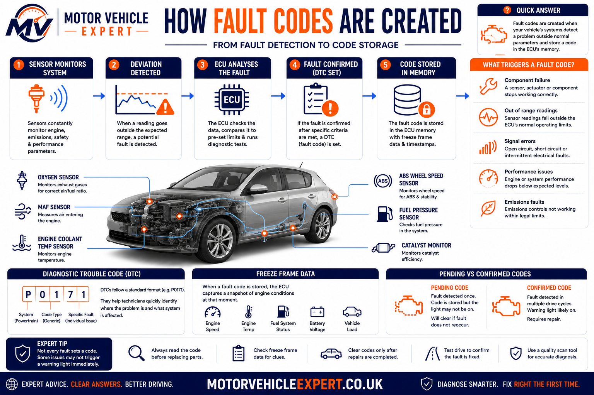
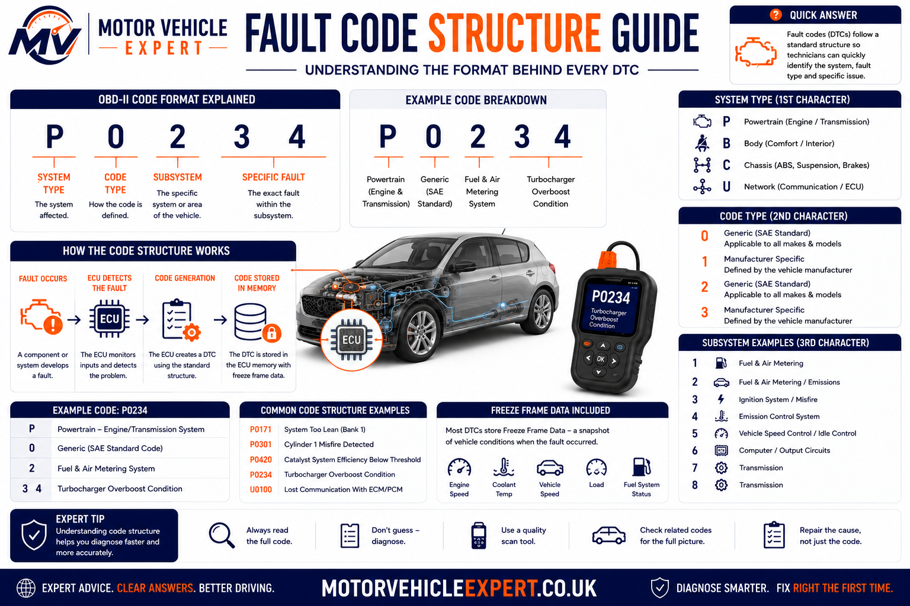
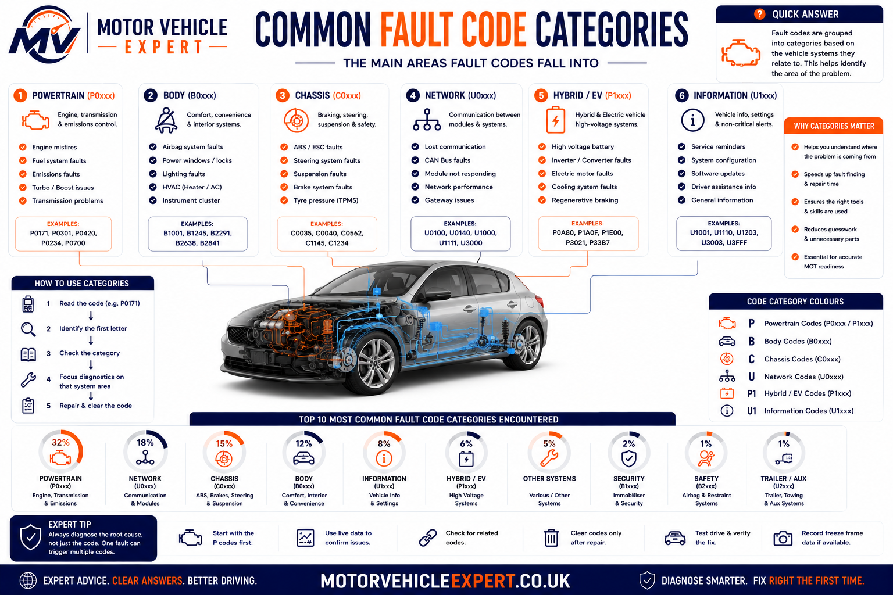
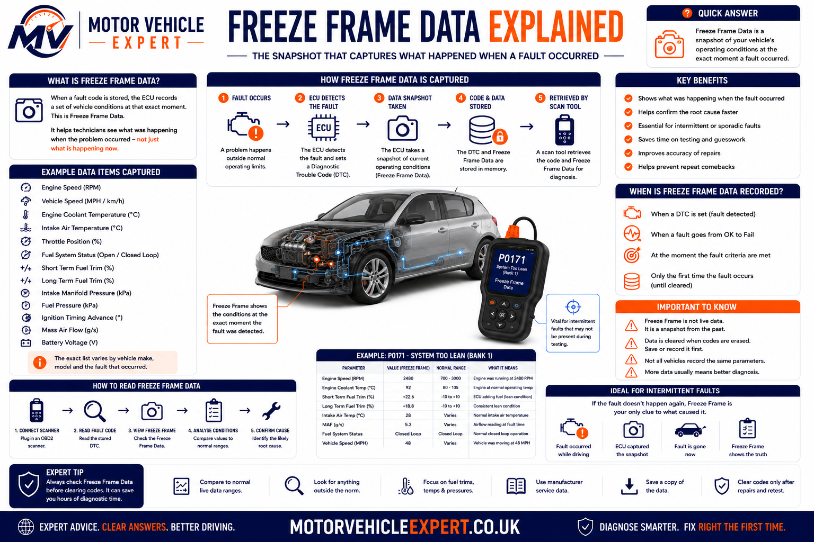
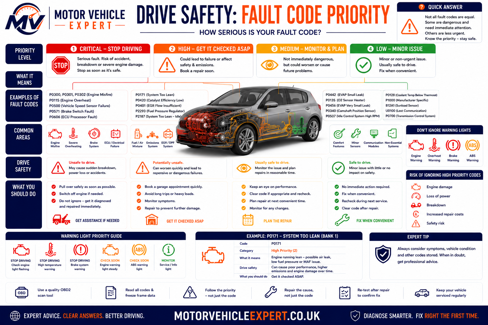

What Does a Vehicle Fault Code Actually Tell You?
A vehicle fault code records that a control module detected a monitored condition outside its expected range. It identifies the affected system or circuit and helps direct further testing, but it does not automatically prove that the component named in the description has failed.
The correct response is to record every stored, pending and permanent code, inspect the freeze-frame conditions, consider the driver’s symptoms, review live data and test the relevant mechanical and electrical systems before replacing parts.
Read Every Module
Engine, transmission, ABS, airbag, body and network modules may hold related information that a basic engine-only scanner cannot display.
Record Codes Before Clearing
Clearing codes too early can erase freeze-frame information and remove valuable evidence needed to reproduce an intermittent fault.
Compare Live Data
Sensor values, fuel trims, voltage, pressure, temperature and module status help show whether the problem is currently present.
Do Not Guess From the Description
A sensor-related code may be caused by wiring, connector damage, low voltage, a vacuum leak, mechanical wear or another system influencing the reading.
| What the code provides | What it does not prove | What should happen next |
|---|---|---|
| The control module and system that detected an abnormal condition | That the component named in the description must be replaced | Read all related codes and identify which module reported the problem |
| The general circuit, performance or operating problem | Whether the cause is electrical, mechanical, software-related or environmental | Inspect wiring, connectors, mechanical condition and operating data |
| The conditions recorded when the code met its setting criteria | That the fault is still present continuously | Review freeze-frame data and attempt to reproduce the same conditions |
| A direction for diagnosis | A guaranteed repair quotation or parts list | Complete evidence-based testing before authorising repairs |
P0171 does not automatically mean a failed oxygen sensor. P0299 does not automatically mean a failed turbocharger. P0420 does not automatically mean the catalytic converter must be replaced. The complete system must be tested first.
A diagnostic scan is useful, but it cannot replace MOT-history checks, service-record review, warning-light inspection and a proper test drive. Use our free Used Car Checker Pro to work through the complete buying process before committing to a vehicle.
Find Your OBD Fault Code
Enter a diagnostic trouble code such as P0420, P0300, P0171, P0335, P0440 or P0700. When a dedicated Motor Vehicle Expert guide is available, the lookup will take you directly to its mechanic-style explanation.
The lookup reads the live fault-code entries in your site’s search.json file. This means newly published code pages can become searchable without manually adding every URL to this page’s JavaScript.
Dedicated Code Guide Found
You will be taken directly to the live page explaining that code’s meaning, symptoms, causes, diagnosis, repair costs and driving risk.
Use the Full Library
Browse the grouped code sections below to find related systems, nearby code numbers and diagnostic guidance.
Use the Diagnostic App
When you only know the warning light or symptom, the Diagnostic App can help organise the likely systems that require investigation.
Open the Diagnostic App →Clearing the warning light can remove freeze-frame evidence and reset readiness monitors. Photograph or write down all stored, pending and permanent codes before erasing anything.
What Fault Codes Look Like in Real Diagnosis
In workshop diagnosis, the first fault code displayed is not always the first fault that occurred. Several codes can be stored after one underlying problem affects multiple systems, and a secondary code may distract attention from the original cause.
For example, a weak battery can produce low-voltage, communication, throttle, steering and transmission codes at the same time. Replacing several control modules would be an expensive mistake if the real problem is poor supply voltage or a damaged earth connection.
A split intake hose can create lean-mixture, airflow, idle and misfire codes. A failing ignition coil can trigger cylinder-misfire codes and later contribute to catalyst-efficiency faults. A coolant-temperature problem can affect fuel mixture, emissions, cooling-fan operation and warm-up performance.
P0171 Lean Mixture
The oxygen sensor may be reporting the lean condition correctly. The actual cause could be an intake leak, weak fuel delivery, incorrect MAF data or an exhaust leak.
P0299 Turbo Underboost
Low boost may result from a split hose, intercooler leak, actuator fault, vacuum problem, exhaust restriction or boost-control issue rather than a failed turbocharger.
P0420 Catalyst Efficiency
The catalyst may be worn, but misfires, mixture faults, oil consumption, exhaust leakage or oxygen-sensor behaviour must be checked before replacement.
P0335 Crank Sensor Circuit
The sensor may have failed, but wiring continuity, supply voltage, connector condition, trigger-wheel condition and live cranking RPM should also be tested.
P0128 Slow Engine Warm-Up
A thermostat stuck open is common, but low coolant, an inaccurate temperature sensor or unusual operating conditions can also influence the code.
P0700 Transmission Request
P0700 normally means the transmission module has requested the engine warning light. The useful fault information must be read from the gearbox module itself.
The better question is: “What conditions caused the module to set this code, and what evidence confirms the root cause?” That change in approach prevents many unnecessary repairs.
What Is a Vehicle Fault Code?
A vehicle fault code, also called a diagnostic trouble code or DTC, is an electronic record created by a control module when a monitored circuit, signal or operating condition meets the programmed criteria for a fault.
Modern vehicles contain many control modules. The engine ECU is only one of them. Depending on the vehicle and scan tool, codes may be stored by the transmission, ABS, airbag, power steering, body-control, climate-control, parking-brake, battery-management and driver-assistance systems.
Each module constantly compares sensor inputs, calculated values and commanded outputs. When a value becomes implausible, disappears, remains outside an expected range or fails to respond correctly, the module may record a code.
Electrical Signal Problem
Open circuits, short circuits, poor connections, missing supplies and damaged earth paths can cause high-input, low-input or circuit codes.
Reading Is Plausible but Incorrect
A sensor may produce a signal, but the value does not agree with the operating conditions or with other related sensors.
System Cannot Reach Its Target
Examples include insufficient boost, excessive EGR flow, slow coolant warm-up, incorrect cam timing or weak catalyst performance.
Modules Stop Sharing Data
Network codes can appear when a control unit loses communication, receives invalid data or experiences a supply-voltage problem.
| Fault-code wording | What it generally indicates | Examples of possible causes |
|---|---|---|
| Circuit open | Electrical path is incomplete | Broken wire, disconnected plug, damaged terminal or failed internal circuit |
| Circuit high | Signal voltage is higher than expected | Open earth, short to voltage, disconnected sensor or damaged wiring |
| Circuit low | Signal voltage is lower than expected | Short to earth, missing supply, internal sensor fault or connector contamination |
| Range/performance | Signal exists but does not agree with expected operation | Contaminated sensor, mechanical restriction, air leak, calibration issue or inaccurate reading |
| Correlation | Two related signals do not agree | Timing problem, incorrect sensor output, wiring fault or mechanical misalignment |
| Efficiency below threshold | A monitored system is not achieving its expected result | Worn catalyst, upstream engine fault, exhaust leak or incorrect sensor response |
“Sensor circuit high,” “sensor performance” and “system too lean” describe different diagnostic situations. Do not shorten every code to “bad sensor.”
How Vehicle Fault Codes Are Created
Control modules do not normally store a confirmed fault code because of one unusual reading. Each monitoring strategy has programmed conditions that determine when the test can run, what result counts as a failure and how many failed checks are required.
A catalyst monitor, for example, may require the engine to be warm, the vehicle to operate within a certain load range and no interfering faults to be present. A misfire monitor may run continuously. An EVAP leak test may only run during particular temperatures, fuel levels and driving conditions.
1. Sensors Measure Operation
Sensors report temperature, pressure, speed, oxygen content, airflow, position, voltage and other operating conditions.
2. The Module Processes Data
The ECU or relevant control unit compares actual readings with expected values and calculated models.
3. Enable Conditions Are Met
The diagnostic monitor runs only when temperature, load, speed and other required conditions are suitable.
4. An Abnormal Result Appears
A reading becomes implausible, falls outside its range or fails to respond as commanded.
5. The Module Confirms the Fault
Some faults are recorded immediately, while others must fail on more than one monitoring cycle.
6. Freeze Frame Is Stored
Key operating values may be captured to show the conditions present when the fault was detected.
7. The DTC Is Recorded
The module stores the code with a status such as pending, confirmed, historic or permanent.
8. A Warning Light May Illuminate
Depending on the system and severity, the driver may see an engine, ABS, airbag, steering or other warning.

Different monitors use different enable conditions. This is why an intermittent fault may take several journeys to return after the codes have been cleared.
Immediate Detection
Serious electrical faults, clear circuit failures and continuous misfires may be recorded rapidly.
Confirmation Required
Some emissions faults first become pending and only illuminate the warning light after the monitor fails again.
Conditions May Not Repeat
Vibration, temperature, moisture or a particular engine load may be required before the failure reappears.
The diagnostic monitor may not have run yet, or the original operating conditions may not have occurred again. A successful road test should reproduce the relevant speed, temperature and load safely rather than simply driving around at random.
How to Read an OBD-II Fault Code
A standard diagnostic trouble code normally contains one letter followed by four characters. Each position provides information about the vehicle area, whether the code is standardised or manufacturer-specific, the system subgroup and the individual fault.
P — Powertrain
The code concerns the engine, transmission or related emissions and driveline controls.
0 — Generic
A zero commonly indicates a standardised code whose general meaning is shared across compliant manufacturers.
1 — System Group
The third character helps identify the broad subsystem, such as fuel and air metering.
28 — Specific Reference
The final characters identify the individual diagnostic condition within that code group.

Code structure helps organise diagnosis, but the complete definition must still be confirmed using reliable information for the exact vehicle.
| Code position | Example | Meaning | Diagnostic use |
|---|---|---|---|
| First character | P | Powertrain | Directs attention towards engine, emissions or transmission systems |
| Second character | 0 | Commonly a generic standardised code | Indicates whether a broad standard definition may apply |
| Third character | 1 | System subgroup | Narrows the code towards a particular functional area |
| Final characters | 28 | Individual diagnostic condition | Provides the specific reference that must be looked up accurately |
Manufacturer-specific definitions and diagnostic procedures can vary. Confirm the exact code description, module, engine, model and model year before testing or ordering parts.
What Do P, B, C and U Fault Codes Mean?
The first character of a diagnostic trouble code identifies the broad vehicle system associated with the fault. Standard OBD-II code families begin with P, B, C or U, although the amount of information available depends on the vehicle, control module and diagnostic equipment being used.
Most basic code readers concentrate on powertrain codes because emissions-related engine information must be accessible through standard OBD-II communication. Professional scan tools can usually enter many more modules and retrieve body, chassis, network and manufacturer-specific faults.
Powertrain
Engine, fuelling, ignition, emissions, turbocharging, transmission and related driveline-control faults.
Examples: P0128, P0300, P0420Body Systems
Body-control functions such as airbags, climate control, central locking, lighting, seats, windows and interior electronics.
Examples vary by manufacturerChassis Systems
ABS, traction control, stability control, steering, suspension and other systems influencing vehicle control.
Common in ABS and steering modulesNetwork Communication
Communication failures, missing messages and invalid data exchanged between electronic control modules.
Often linked to CAN-bus systems
The letter is only the first stage of interpretation. The reporting control module, complete code definition, status and vehicle-specific diagnostic information must also be checked.
| Code family | Typical systems covered | Possible symptoms | Scanner requirement |
|---|---|---|---|
| P — Powertrain | Engine, emissions, fuelling, ignition, turbo and transmission | Engine light, rough running, limp mode, poor economy, smoke or gear-selection problems | Generic codes may be available through a basic OBD-II reader |
| B — Body | Airbags, lighting, locks, windows, climate control and comfort electronics | Airbag light, failed central locking, lighting problems or non-working interior equipment | Module-capable or manufacturer-compatible scanner usually required |
| C — Chassis | ABS, traction control, stability control, steering and active suspension | ABS light, traction warning, heavy steering or disabled stability control | Chassis-system access and live wheel-speed or steering data may be needed |
| U — Network | Communication between control modules | Multiple warning lights, non-starting, intermittent functions or modules that cannot be reached | Full-system scan and electrical network diagnosis normally required |
An inexpensive engine-code reader can report “no codes” while the ABS, airbag, body or transmission module still contains important faults. The scanner must be able to communicate with the system being investigated.
Generic vs Manufacturer-Specific Fault Codes
Generic codes use standardised definitions intended to provide a broadly consistent meaning across compliant vehicles. Manufacturer-specific codes allow a vehicle maker to report additional faults, functions and diagnostic detail not covered by the generic standard.
A standard P0 code normally provides a recognisable starting point across different makes. A manufacturer-controlled P1 code may have a different meaning or test procedure depending on the brand, engine, transmission, model year and control-module software.
Standardised Across Compliant Vehicles
Generic codes are intended to provide a shared diagnostic language for common powertrain and emissions faults.
- ✓Commonly use a zero in the second position.
- ✓Broad meaning is standardised.
- ✓Often readable with a basic OBD-II scanner.
- ✓Useful for emissions-related diagnosis.
- !Vehicle-specific testing may still be required.
Defined for Particular Vehicle Applications
Manufacturer-controlled codes provide additional detail for systems, strategies and components unique to a particular vehicle.
- ✓May use a one in the second position.
- ✓Definition can vary between manufacturers.
- ✓May require enhanced scanner access.
- ✓Repair procedures may be brand-specific.
- !Generic descriptions may be misleading.
Even when a code is generic, component locations, wiring layouts, expected values and test procedures can still differ significantly between vehicles.
Confirm Model and Engine
Similar-looking vehicles may use different engines, sensor arrangements, control modules and wiring diagrams.
Identify the Reporting Module
The same number read from a different module or manufacturer may not describe the same diagnostic condition.
Use Reliable Technical Information
Test values, pin assignments, enable conditions and repair procedures should match the exact vehicle application.
Save the module name, full code, status, description and any subcode or failure-type information. Writing down only “P1 code” can remove important diagnostic detail.
Stored, Pending, Permanent, Current and Historic Codes
The code number explains the detected condition, while its status shows how the control module currently views that fault. Two vehicles displaying the same code may require different decisions when one code is current and confirmed but the other is historic and has not returned.
Status descriptions vary between scan tools and manufacturers. Common terms include pending, confirmed, stored, current, active, intermittent, historic, permanent and previously present.
Pending Code
The monitor has detected a possible fault, but the confirmation conditions required for a fully stored code may not yet have been completed.
Stored Code
The module has confirmed that the programmed fault criteria were met and has retained the DTC in memory.
Current or Active Code
The control module currently detects the fault or can confirm that the abnormal condition is still present.
Historic Code
The fault occurred previously but is not currently detected. It may have been intermittent, repaired or caused by a temporary condition.
Permanent Code
Certain emissions-related codes remain recorded until the vehicle’s own monitor confirms that the fault has been repaired.
Not Present at Time of Scan
Temperature, vibration, moisture, load or movement may be required before the fault becomes active again.
| Code status | What it usually means | Can clearing remove it? | Recommended response |
|---|---|---|---|
| Pending | Fault detected but not fully confirmed | Usually, although this may remove useful evidence | Record data and determine whether the monitor fails again |
| Stored or confirmed | Fault criteria have been met | Often, but the fault will return if the cause remains | Diagnose using code data, symptoms and system tests |
| Current or active | Fault is present at the time of testing | May clear temporarily but usually resets quickly | Test while the condition is active whenever safe |
| Historic | Fault was previously detected but is not active now | Normally | Review frequency, symptoms and surrounding code history |
| Permanent | Emissions-related record awaiting a successful monitor result | Not normally through a simple clear-codes command | Repair the cause and allow the relevant monitor to complete |
Status Patterns That Need Prompt Diagnosis
- !The code is current or active.
- !The warning light is flashing.
- !The engine is misfiring or overheating.
- !Several safety modules report related faults.
- !The same code returns immediately after clearing.
- !The vehicle enters limp mode or will not start.
Status Patterns That May Be Historical
- ✓The code is marked historic or previously present.
- ✓No warning light or symptom remains.
- ✓The repair is supported by an invoice.
- ✓The relevant monitor has completed successfully.
- ✓No pending code returns after a suitable road test.
- !Intermittent faults can still return later.
A warning light remaining off for a few minutes does not prove the vehicle is fixed. The relevant monitor may need a complete journey, warm-up cycle or particular operating condition before it can test the system again.
Freeze-Frame Data Explained
Freeze-frame data is a snapshot of selected operating values captured when a control module records a qualifying fault. It helps show what the vehicle was doing when the code set and can provide valuable direction for reproducing an intermittent problem.
The available values vary by vehicle, module and scan tool. A generic engine scan commonly includes engine speed, coolant temperature, vehicle speed, engine load, throttle position, fuel trims and calculated airflow. Enhanced data may provide much more detail.
RPM and Engine Load
Shows whether the fault occurred at idle, during acceleration, under heavy load or while the engine was slowing down.
Coolant Temperature
Helps identify whether the engine was cold, warming up, fully hot or potentially overheating when the fault appeared.
Vehicle Speed
Indicates whether the fault happened while stationary, in urban driving or at higher road speed.
Short- and Long-Term Fuel Trim
Shows how much correction the ECU was applying to the fuel mixture when the fault criteria were met.
Battery or Module Voltage
Low supply voltage can explain multiple apparently unrelated circuit and communication codes.
Throttle Position
Helps distinguish an idle problem from a fault that appeared during acceleration or sustained load.
MAF or MAP Reading
Provides evidence about airflow, manifold pressure and whether the values agree with engine speed and load.
Requested and Actual Boost
Enhanced data can show whether boost was too low, too high or slow to follow the control module’s target.
Oxygen-Sensor Information
Sensor voltage or lambda data can help show mixture conditions and catalyst-monitor behaviour.

The snapshot should be interpreted as a group of related values. One number viewed in isolation may appear normal while the relationship between several readings reveals the problem.
Lean Code Recorded at Idle
High positive fuel trim at low engine speed may direct attention towards a vacuum or unmetered-air leak.
- ✓Check intake hoses and vacuum circuits.
- ✓Compare trims at idle and higher RPM.
- ✓Consider a controlled smoke test.
- !Do not assume the oxygen sensor caused the lean condition.
Underboost Recorded Under Heavy Load
High engine load with low actual boost may support testing for leakage, actuator movement, control pressure or turbo performance.
- ✓Inspect boost hoses and intercooler joints.
- ✓Compare requested and actual pressure.
- ✓Test actuator and control operation.
- !Do not condemn the turbo from the code alone.
Once erased, the original snapshot may be impossible to recover. This can make a temperature-, speed- or load-dependent fault much harder to reproduce.
Live Data vs Fault Codes
A fault code records what the control module detected. Live data shows what sensors, actuators and calculated values are reporting while the vehicle is being tested. Used together, they help move diagnosis from a description towards evidence.
Live data is most useful when values are compared with operating conditions, known-good expectations and related signals. A number displayed by a scanner is not automatically correct simply because it appears believable.
Explain What the Module Detected
- ✓Identifies the affected system or circuit.
- ✓Records whether fault criteria were met.
- ✓May include useful status information.
- ✓Provides direction for further testing.
- !Does not automatically prove which part failed.
Helps Explain Why It Happened
- ✓Shows current sensor and calculated values.
- ✓Allows comparison under changing conditions.
- ✓Can reveal implausible or slow responses.
- ✓Supports testing before parts replacement.
- !Must be interpreted correctly to be useful.

Accurate diagnosis often combines the code, its status, freeze-frame conditions, live values, physical inspection and direct electrical or mechanical testing.
Fuel Trims
Positive correction can indicate an apparent lean condition, while heavy negative correction can indicate excessive fuel or inaccurate sensor information.
MAF and MAP Values
Readings should respond logically to engine speed, throttle opening, load and boost pressure.
Cranking RPM and Synchronisation
A missing RPM signal while cranking can support investigation of the crank-sensor circuit or engine-speed input.
Coolant and Intake-Air Readings
A cold engine should normally report values reasonably close to ambient temperature before start-up.
Battery and Charging Voltage
Low or unstable voltage can produce misleading circuit, communication and actuator faults across several modules.
Cylinder Misfire Counters
Enhanced scanners may identify which cylinder accumulates misfires and under which operating conditions.
Requested vs Actual Boost
Comparing target and measured pressure helps determine whether the system is underboosting, overboosting or responding slowly.
Lambda and O2 Sensor Response
Upstream and downstream sensor behaviour can support mixture and catalyst diagnosis when interpreted correctly.
Throttle and Pedal Position
Dual signals should change smoothly and agree with each other through the operating range.
A damaged sensor may still provide a believable number. Compare it with a related sensor, a direct measurement or a known physical condition before accepting it as accurate.
Why a Fault Code Does Not Identify the Failed Part
A fault-code description normally identifies the condition detected by the control module, not the complete chain of events that caused it. Sensors often report a genuine problem created somewhere else in the system.
A lean-mixture code can be set because an oxygen sensor accurately detects excess oxygen. An underboost code can be set because the pressure sensor accurately reports low boost. Replacing those reporting sensors would not correct the air leak, weak fuel delivery or damaged boost pipe causing the condition.
Wiring May Be the Cause
Broken conductors, poor terminals, water ingress, damaged plugs and missing supplies can make a working sensor appear faulty.
Mechanical Operation May Be Wrong
Air leaks, blocked passages, weak compression, incorrect timing and pressure loss can create abnormal sensor readings.
Low Voltage May Affect Several Modules
A weak battery or poor earth can interrupt communication and produce several module faults during starting.
An Earlier Engine Fault May Be Responsible
Misfires, oil consumption, mixture faults and exhaust leaks can damage or confuse catalyst monitoring.
Pressure Can Escape Elsewhere
Split hoses, leaking intercoolers, control faults and exhaust restrictions can create boost codes without turbocharger failure.
Oil Condition Can Affect Control
Low oil level, incorrect viscosity, restricted oil flow and worn timing components may prevent variable timing from reaching its target.
| Fault code example | Common incorrect assumption | Other causes that must be considered |
|---|---|---|
| P0171 — System too lean | Replace the oxygen sensor | Intake leak, MAF error, weak fuel pressure, injector restriction or exhaust leak |
| P0299 — Turbo underboost | Replace the turbocharger | Split boost hose, intercooler leak, actuator fault, vacuum loss, EGR issue or exhaust restriction |
| P0420 — Catalyst efficiency | Replace the catalytic converter immediately | Misfire history, mixture fault, oil burning, exhaust leakage or oxygen-sensor behaviour |
| P0335 — Crankshaft sensor circuit | Fit a new crank sensor | Wiring fault, connector damage, missing supply, trigger-wheel damage or ECU input problem |
| P0128 — Coolant below regulating temperature | Thermostat is always the cause | Low coolant, inaccurate temperature sensor, cooling-fan operation or unusual operating conditions |
| P0700 — Transmission control malfunction | The gearbox needs replacing | A separate transmission-module code must be read before the actual fault can be identified |
Replace Components Until the Light Stays Off
- !Relies on code descriptions alone.
- !Ignores wiring and connector condition.
- !May replace expensive working components.
- !Can leave the original cause unresolved.
- !Creates repeated labour and parts costs.
Test the System and Confirm the Root Cause
- ✓Records the complete scan before clearing.
- ✓Reviews freeze-frame and live data.
- ✓Checks supplies, earths, wiring and connectors.
- ✓Completes relevant mechanical tests.
- ✓Verifies the repair with a road test and re-scan.
Paying for an appropriate smoke test, pressure test, wiring check or live-data assessment may prevent the replacement of a working sensor, turbocharger, catalytic converter or control module.
The Professional Diagnostic Process
Professional diagnosis is a controlled process of gathering evidence, narrowing possible causes and proving the fault before parts are replaced. The fault code provides an entry point, but the technician must still understand why the module recorded it and whether the problem is electrical, mechanical, hydraulic, pneumatic, software-related or caused by another system.
The most efficient diagnostic route is not always the shortest-looking route. Spending time confirming the customer complaint, reading every relevant module and reviewing freeze-frame information can prevent hours of unnecessary dismantling and expensive parts replacement.
1. Confirm the Driver’s Complaint
Establish exactly what the vehicle does, when it happens, how frequently it occurs and whether any warning lights, noises, smells or performance changes accompany it.
2. Review Vehicle History
Check recent repairs, servicing, battery replacement, accident damage, modifications, fuel contamination and any previous diagnostic work.
3. Complete a Full-System Scan
Read all accessible modules rather than scanning only the engine ECU. Related faults may be stored elsewhere in the vehicle.
4. Save the Scan Report
Record every code, status, module, description and available freeze-frame value before anything is cleared or disconnected.
5. Prioritise the Codes
Identify which faults are current, which are likely secondary and which may have resulted from low voltage or an earlier repair.
6. Inspect the Vehicle
Look for damaged wiring, loose connectors, split hoses, fluid loss, poor earths, incorrect parts and visible mechanical problems.
7. Analyse Live Data
Compare sensor values, calculated data and actuator commands under the operating conditions relevant to the fault.
8. Complete Direct Testing
Use voltage, resistance, pressure, vacuum, smoke, compression, waveform or mechanical tests appropriate to the suspected system.
9. Confirm the Root Cause
The evidence should explain the code, the symptoms and the abnormal test results before replacement parts are authorised.
10. Complete the Repair
Repair the underlying fault, including damaged wiring, leaks, contamination or mechanical problems rather than treating only the symptom.
11. Relearn or Calibrate
Some components require programming, adaptation, calibration or a relearn procedure after repair or replacement.
12. Verify the Repair
Re-scan the vehicle, review live data and complete an appropriate road test so the relevant monitor can run again.
Questions That Help Reproduce the Fault
- ✓Does it happen when the engine is cold or fully warm?
- ✓Does it occur at idle, during acceleration or at steady speed?
- ✓Is the problem affected by rain, temperature or fuel level?
- ✓Did it begin after servicing, battery work or another repair?
- ✓Does switching the ignition off temporarily restore operation?
- ✓Which warning lights appear, and do they flash or remain steady?
Checks That Should Happen Early
- ✓Battery condition and charging voltage.
- ✓Fluid levels and obvious contamination.
- ✓Fuses, supplies and major earth connections.
- ✓Disconnected, damaged or incorrectly routed wiring.
- ✓Split intake, vacuum and boost hoses.
- ✓Loose components or signs of recent repair work.
| Diagnostic stage | Main purpose | Evidence collected | Common mistake avoided |
|---|---|---|---|
| Complaint confirmation | Define the actual problem | Symptoms, frequency and operating conditions | Diagnosing a different fault from the one the driver experiences |
| Full-system scan | Identify all reporting modules | Current, pending, historic and communication codes | Focusing on one engine code while ignoring related system faults |
| Freeze-frame review | Understand when the fault occurred | Temperature, load, speed, RPM, voltage and fuel correction | Testing under conditions unrelated to the original failure |
| Visual inspection | Find obvious physical causes | Leaks, damage, loose plugs, poor routing and previous repairs | Performing advanced testing before checking basic faults |
| Live-data analysis | Compare actual system behaviour | Sensor response, actuator commands and calculated values | Replacing parts without confirming abnormal operation |
| Direct testing | Prove the failure | Voltage, waveform, pressure, vacuum, smoke or mechanical results | Treating a fault-code description as a completed diagnosis |
| Repair verification | Confirm the root cause has been removed | Successful road test, normal live data and completed monitors | Returning the vehicle before the repair has been proven |
A low-voltage code may explain several communication and actuator faults. A cylinder misfire may later cause a catalyst-efficiency code. Identifying the likely primary fault prevents secondary codes from directing diagnosis towards the wrong repair.
A useful test does more than confirm that a symptom exists. It should help distinguish between competing explanations, such as a failed sensor, damaged wiring, an air leak or a mechanical engine problem.
Common Fault-Code Diagnostic Mistakes
Many unnecessary repairs happen because the scan result is treated as the diagnosis rather than the beginning of the investigation. The most expensive mistake is often replacing a major component without proving that it caused the code.
Fault-code diagnosis becomes more reliable when the technician preserves the original evidence, checks basic vehicle condition and understands how several systems can influence one another.
Replacing the Named Sensor
The sensor may be reporting a genuine problem caused by an air leak, pressure fault, mechanical issue or damaged wiring.
Clearing Codes Immediately
Erasing the scan before recording it can remove freeze-frame data and valuable intermittent-fault evidence.
Reading Only the Engine ECU
ABS, transmission, body and network modules may hold the information needed to understand the complete fault.
Ignoring Battery Voltage
Low supply voltage can generate circuit, communication, throttle, steering and transmission codes across the vehicle.
Ignoring Wiring and Connectors
Heat, vibration, water, oil and previous repairs can damage wiring close to otherwise reliable components.
Testing Without Reproducing Conditions
An underboost fault recorded at high load may not be visible while the engine is idling in the workshop.
Trusting One Live Value
A sensor can display a plausible but inaccurate reading. Related values and direct measurements should be compared.
Fitting Cheap Unverified Parts
Incorrect specifications, poor calibration and low-quality components can introduce new faults or fail to correct the original one.
Skipping Repair Verification
Clearing the code and returning the vehicle before the monitor runs can leave an unresolved fault hidden temporarily.
Scan, Guess, Replace and Clear
- !Only one module is scanned.
- !Freeze-frame information is ignored.
- !The component named in the code is ordered.
- !No wiring or mechanical testing is completed.
- !The light is cleared without a proper road test.
- !The fault returns after the customer leaves.
Scan, Analyse, Test, Repair and Verify
- ✓The complete vehicle is scanned.
- ✓Codes and freeze frame are saved.
- ✓Primary and secondary faults are separated.
- ✓Direct testing confirms the root cause.
- ✓The correct repair is completed.
- ✓The repair is verified under suitable conditions.
| Fault-code situation | Common mistake | Better diagnostic response |
|---|---|---|
| Several unrelated codes appear after a flat battery | Diagnose every module separately | Test battery condition, charging voltage and major earth connections first |
| P0171 appears with high positive fuel trim | Replace the oxygen sensor | Compare fuel trims at different RPM and test for unmetered air or weak fuel delivery |
| P0299 appears only during heavy acceleration | Check boost while stationary and condemn the turbo | Reproduce the load safely and compare requested with actual boost pressure |
| P0420 follows a long-term misfire | Replace the catalyst without checking the earlier fault | Correct the misfire and evaluate catalyst and oxygen-sensor operation afterwards |
| A historic code is found with no symptoms | Replace the named component immediately | Review previous repairs, clear only after recording and check whether the code returns |
| A permanent emissions code remains after repair | Assume the repair failed immediately | Confirm the repair and allow the relevant self-test monitor to complete |
Codes involving oil pressure, overheating, braking, steering, airbags, severe misfires or transmission failure require assessment of the underlying safety risk. Switching off a warning light does not make the vehicle safe.
Vehicle Diagnostic Tools Compared
Diagnostic equipment ranges from inexpensive code readers to manufacturer dealer systems, oscilloscopes and specialist test equipment. The correct tool depends on the system being investigated and the evidence required.
A more expensive scanner does not automatically produce a correct diagnosis. The technician must still understand the vehicle, choose the right tests and interpret the results accurately.
Basic OBD-II Code Reader
Reads and clears common generic engine and emissions codes. Some units also display limited live data.
Typical Use: Basic engine-code checksBluetooth OBD Adapter
Connects the vehicle to a phone or tablet application and may display codes, live data and basic graphs.
Typical Use: Owner-level monitoringProfessional Multi-System Scan Tool
Accesses engine, transmission, ABS, airbags, body systems and other control modules on supported vehicles.
Typical Use: Full-system diagnosisDealer Diagnostic Equipment
Provides brand-specific tests, coding, programming, software updates and guided diagnostic functions.
Typical Use: Advanced manufacturer workDigital Multimeter
Measures voltage, resistance, continuity and current when used with the correct circuit and test procedure.
Typical Use: Supplies, earths and wiringAutomotive Oscilloscope
Displays electrical signals over time and can reveal intermittent, distorted or poorly timed waveforms.
Typical Use: Sensors, ignition and networksSmoke Testing Equipment
Introduces controlled smoke into an intake or EVAP system to reveal leaks that may not be visible.
Typical Use: Lean and EVAP codesFuel, Boost and Oil Pressure Gauges
Direct pressure measurement helps confirm whether a sensor code represents a real mechanical pressure fault.
Typical Use: System performance testingCompression and Leak-Down Testers
Assess cylinder sealing and help distinguish ignition or fuelling faults from internal engine problems.
Typical Use: Persistent misfire diagnosis| Diagnostic tool | What it can do well | Main limitation | Best suited to |
|---|---|---|---|
| Basic code reader | Read common generic powertrain codes | May not access ABS, airbags, body systems or manufacturer data | Initial engine-light checks |
| Bluetooth adapter | Convenient code reading and basic live-data display | Capability depends heavily on adapter and application quality | Drivers monitoring basic engine information |
| Professional scanner | Full-system scans, enhanced live data and active tests | Coverage and functions differ between vehicles | Independent workshop diagnosis |
| Dealer equipment | Manufacturer-guided tests, programming and software functions | Higher cost and usually brand-specific | Complex coding, programming and manufacturer faults |
| Multimeter | Supply, earth, continuity and circuit testing | Can miss fast or intermittent signal problems | Basic and advanced electrical diagnosis |
| Oscilloscope | Detailed waveform and timing analysis | Requires training and reliable reference information | Intermittent electrical and signal faults |
| Smoke machine | Reveals intake, boost and EVAP leakage | Must be used at suitable pressure and on the correct system | Lean-mixture, boost and vapour-leak diagnosis |
| Mechanical pressure gauge | Confirms actual system pressure independently | Correct fittings and safety controls are essential | Fuel, oil, boost and hydraulic pressure faults |
Suitable Owner-Level Uses
- ✓Recording a generic engine fault code.
- ✓Checking whether a code returns after repair.
- ✓Viewing basic coolant temperature and RPM.
- ✓Identifying whether professional diagnosis is needed.
- !It should not be used as an automatic parts selector.
Situations Beyond a Basic Reader
- !ABS, airbag or steering warning lights are active.
- !The gearbox module needs to be scanned.
- !Programming or component coding is required.
- !An intermittent waveform fault is suspected.
- !Active tests or manufacturer data are required.
Professional results depend on understanding system operation, choosing suitable tests and interpreting the evidence correctly. Expensive equipment cannot compensate for an incorrect diagnostic process.
A visual inspection, voltage check, smoke test or live-data comparison may provide the answer before expensive dismantling becomes necessary.
Browse the Complete Live Fault-Code Library
The fault-code guides below are organised by vehicle system rather than presented as one long, confusing list. This makes it easier to identify related codes, compare nearby diagnostic conditions and understand how several codes can originate from the same underlying problem.
Every linked page provides a dedicated explanation of the code meaning, likely symptoms, common causes, diagnostic checks, repair-cost considerations, driving risk and possible MOT implications.
Use the interactive lookup near the beginning of this page. It searches all live -code-meaning.html entries in search.json, including newly added pages that may not yet appear in the featured lists below.
Air-Metering and Intake-System Fault Codes
Air-metering codes relate to the amount, temperature or pressure of air entering the engine and the control of the throttle system. They can cause rough idle, hesitation, stalling, poor acceleration, high fuel consumption, incorrect fuel trims and limp mode.
The named sensor is not always the cause. Split intake hoses, vacuum leaks, blocked air filters, contaminated throttle bodies, wiring faults and incorrect mechanical airflow can produce similar readings.
P0101 — MAF Range/Performance
The measured airflow does not agree with the value expected from engine speed, load and other sensor information.
P0102 — MAF Circuit Low Input
The airflow-sensor signal is lower than expected because of wiring, supply, connector or sensor problems.
P0113 — Intake Air Temperature High Input
The intake-temperature signal voltage is higher than expected, often because of an open circuit or disconnected sensor.
P0121 — Throttle Position Range/Performance
The throttle-position signal does not behave as expected or does not agree with related pedal and throttle values.
P0507 — Idle Speed Higher Than Expected
Engine speed remains above the ECU target because of excess airflow, a throttle problem, PCV fault or incorrect adaptation.
P0638 — Throttle Actuator Range/Performance
The commanded throttle position and actual throttle response do not agree within the expected range.
What Drivers May Notice
- !Rough, unstable or unusually high idle.
- !Hesitation or flat acceleration.
- !Reduced-power or limp-home mode.
- !Stalling when slowing down.
- !Poor fuel economy or abnormal fuel trims.
- !Engine warning light after intake work.
What Should Be Inspected
- ✓Air filter and intake-pipe condition.
- ✓Vacuum, breather and PCV hoses.
- ✓Sensor connector, supply and earth.
- ✓MAF, MAP and throttle live data.
- ✓Throttle-body contamination or sticking.
- ✓Adaptations after cleaning or replacement.
Incorrect chemicals or physical contact can damage sensitive sensing elements. Test the circuit and compare the reading with expected operation before deciding whether cleaning or replacement is appropriate.
Coolant-Temperature and Engine Warm-Up Fault Codes
Cooling-system codes can affect warm-up time, fuel mixture, heater performance, emissions, radiator-fan operation and engine protection. A temperature-sensor circuit code must be distinguished from a genuine overheating or thermostat problem.
P0117 — Coolant Temperature Circuit Low
The coolant-temperature signal is lower than expected electrically, which may appear as an unrealistically hot reading.
P0118 — Coolant Temperature Circuit High
The signal voltage is higher than expected, often because of an open circuit, disconnected sensor or damaged wiring.
P0128 — Coolant Below Regulating Temperature
The engine does not warm up as expected, commonly because of a thermostat stuck open or inaccurate temperature information.
Sensor or Circuit Problem
An impossible reading on a cold engine may indicate wiring or sensor failure rather than actual coolant temperature.
Thermostat or Coolant Flow
Slow warm-up, temperature fluctuation and weak heater performance may point towards thermostat or circulation issues.
Genuine Overheating
Steam, coolant loss, severe temperature rise or bubbling must be treated as a cooling-system emergency rather than only a code-reader problem.
Continuing to drive with serious coolant loss, steam, knocking, severe temperature rise or an overheating warning can cause cylinder-head, head-gasket and engine damage.
Oxygen-Sensor, Lambda and Heater-Circuit Fault Codes
Oxygen sensors help the ECU control fuel mixture and monitor catalytic-converter performance. A code may relate to the sensing element, heater circuit, wiring or the exhaust conditions being measured.
An oxygen sensor can correctly report a lean or rich exhaust condition caused by another problem. Fuel trims, exhaust leaks, sensor response and engine condition should be checked before replacement.
P0130 — O2 Sensor Circuit Bank 1 Sensor 1
General upstream oxygen-sensor circuit fault involving the sensor, wiring, supply or signal.
Low VoltageP0131 — O2 Sensor Circuit Low Voltage
The upstream sensor signal remains lower than expected because of a lean condition or electrical fault.
High VoltageP0132 — O2 Sensor Circuit High Voltage
The sensor reports a high-voltage or rich indication for longer than the ECU expects.
Slow ResponseP0133 — O2 Sensor Slow Response
The upstream sensor changes too slowly between mixture conditions.
No ActivityP0134 — O2 Sensor No Activity Detected
The ECU does not detect the expected upstream oxygen-sensor signal movement.
Heater CircuitP0135 — O2 Sensor Heater Fault
The upstream sensor heater does not draw or respond as expected.
Downstream CircuitP0136 — O2 Sensor Circuit Bank 1 Sensor 2
General circuit fault involving the oxygen sensor positioned after the catalyst.
Downstream LowP0137 — O2 Sensor Low Voltage
The downstream sensor reports a voltage lower than the ECU expects.
Downstream HighP0138 — O2 Sensor High Voltage
The downstream oxygen-sensor signal remains unusually high.
Rear HeaterP0141 — Downstream O2 Heater Fault
The heater circuit for bank 1 sensor 2 does not operate within its expected range.
Biased LeanP2195 — O2 Signal Stuck Lean
The upstream oxygen or air-fuel sensor remains biased towards a lean indication.
Catalyst MonitorP0420 — Catalyst Efficiency Below Threshold
Upstream and downstream oxygen-sensor behaviour suggests insufficient catalyst oxygen-storage performance.
| Code type | Likely diagnostic area | Checks before replacement |
|---|---|---|
| Heater-circuit code | Heater resistance, fuse, supply, earth and wiring | Confirm electrical operation rather than replacing the complete sensor immediately |
| High- or low-voltage code | Actual mixture condition or electrical signal fault | Compare fuel trims, sensor response, wiring and exhaust integrity |
| Slow-response code | Sensor ageing, contamination or mixture-control problem | Check response under controlled mixture changes |
| Catalyst-efficiency code | Catalyst operation and upstream engine condition | Check misfires, fuel mixture, oil burning and exhaust leaks first |
A heater-circuit failure, low signal, slow response and catalyst-monitor code require different tests. Use the complete code wording and identify whether the sensor is positioned before or after the catalytic converter.
Lean, Rich and Fuel-Injector Fault Codes
Fuel-mixture codes are set when the ECU must apply more correction than its strategy allows or when an injector circuit does not operate correctly. Mixture codes can be caused by airflow errors, fuel-pressure faults, injector problems, exhaust leaks, sensor errors or mechanical engine condition.
P0171 — System Too Lean Bank 1
The ECU has reached a high positive fuel correction while attempting to maintain the target mixture.
P0172 — System Too Rich Bank 1
The ECU is removing an excessive amount of fuel because the mixture appears richer than intended.
P0174 — System Too Lean Bank 2
A lean condition is detected on the second cylinder bank of an applicable engine.
P0201 — Injector Circuit Cylinder 1
The cylinder-one injector circuit does not respond electrically as expected.
Vacuum or Unmetered-Air Leak
Fuel trims that improve as RPM rises can support investigation of an intake or vacuum leak.
Weak Fuel Delivery
Fuel pressure, pump delivery, filter restriction or injector flow may be insufficient during higher demand.
Excess Fuel or Incorrect Air Data
Leaking injectors, excessive fuel pressure, incorrect temperature data or inaccurate airflow measurement may be responsible.
Unburned fuel can overheat the catalytic converter, dilute engine oil and create a fire risk if fuel leakage is present.
Random and Cylinder-Specific Misfire Fault Codes
Misfire codes indicate that the ECU has detected uneven crankshaft acceleration associated with incomplete combustion. Ignition, fuelling, compression, timing, air leakage and internal engine faults can all cause misfires.
P0300 — Random or Multiple Misfire
Misfires are detected across more than one cylinder or without a stable cylinder pattern.
P0301 — Cylinder 1 Misfire
Combustion on cylinder one is inconsistent or incomplete.
Cylinder 2P0302 — Cylinder 2 Misfire
The ECU detects a repeated misfire contribution from cylinder two.
Cylinder 3P0303 — Cylinder 3 Misfire
Cylinder three is not contributing evenly under monitored conditions.
Cylinder 4P0304 — Cylinder 4 Misfire
The control module detects combustion irregularity on cylinder four.
Knock SensorP0325 — Knock Sensor Circuit
The knock-sensor circuit or the information used for ignition control does not operate as expected.
Spark Plug or Coil
Worn plugs, weak coils, damaged leads or incorrect plug gaps can interrupt combustion.
Injector or Fuel Supply
Restricted injectors, circuit faults or weak fuel delivery can create lean cylinder misfires.
Compression or Valve Fault
Poor cylinder sealing, valve problems or timing faults may remain after ignition parts are swapped.
Intake or Vacuum Leak
Localised or widespread unmetered air can weaken combustion, particularly at idle.
A severe active misfire can send unburned fuel into the catalytic converter and cause rapid overheating. Reduce load and arrange diagnosis rather than continuing normal driving.
Engine-Timing and Position-Sensor Fault Codes
Crankshaft and camshaft signals allow the ECU to calculate engine speed, position, injection timing and ignition timing. Correlation codes may indicate electrical signal problems or genuine mechanical timing errors.
P0011 — Camshaft Timing Over-Advanced
The commanded camshaft position remains more advanced than the ECU expects.
P0016 — Crank/Cam Position Correlation
The crankshaft and camshaft signals do not agree within the expected timing relationship.
P0335 — Crankshaft Position Circuit
The ECU cannot rely on the crankshaft-position signal for engine speed and position.
P0340 — Camshaft Position Circuit
A camshaft-position circuit fault affects engine-phase information.
Cam PerformanceP0341 — Camshaft Range/Performance
The camshaft-position signal exists but does not agree with expected engine operation.
Sensor and Circuit Causes
- ✓Failed crankshaft or camshaft sensor.
- ✓Broken, shorted or oil-contaminated wiring.
- ✓Poor connector terminal contact.
- ✓Missing voltage supply or earth.
- ✓Damaged trigger wheel or reluctor.
Timing and Oil-Control Causes
- !Stretched timing chain or incorrect belt timing.
- !Low oil level or incorrect oil viscosity.
- !Blocked variable-timing oil passages.
- !Sticking oil-control solenoid.
- !Worn camshaft actuator or timing components.
Timing rattle, difficult starting, poor compression or a crank/cam correlation code can indicate a mechanical timing problem capable of causing major engine damage.
Turbocharger, Boost and EGR Fault Codes
Turbo and EGR faults commonly cause poor acceleration, smoke, limp mode, hesitation and emissions problems. Before replacing a turbocharger or EGR valve, the intake, vacuum, exhaust and control systems must be assessed.
P0234 — Turbocharger Overboost
Measured boost pressure exceeds the ECU target because control vanes, an actuator, solenoid or pressure reference may not be working correctly.
P0299 — Turbocharger Underboost
Actual boost remains below the requested value because pressure is lost, control is weak or the engine cannot create the expected airflow.
P0401 — EGR Flow Insufficient
Exhaust-gas recirculation is lower than commanded because of blockage, sticking, control or sensing problems.
P0402 — EGR Flow Excessive
Too much exhaust gas enters the intake, potentially causing rough running, smoke, hesitation or stalling.
Pipes and Intercooler
Split hoses, loose clips and intercooler cracks can release compressed air before it reaches the engine.
Actuator, Vacuum or Solenoid
The turbo mechanism may be sound but unable to follow ECU commands because of a control-system problem.
DPF or Exhaust Flow
Restricted exhaust flow can affect turbo response and EGR operation, especially on diesel vehicles.
EVAP Leak, Purge and Vent-Control Fault Codes
The evaporative-emissions system stores fuel vapour and controls when it is drawn into the engine. EVAP codes can be caused by loose caps, split hoses, leaking valves, damaged canisters, pressure-sensor faults and electrical problems.
P0440 — EVAP System Malfunction
General evaporative-emissions system fault.
P0441 — Incorrect Purge Flow
Purge flow does not agree with the ECU command.
P0442 — Small EVAP Leak
A small vapour leak is detected in the sealed system.
P0443 — Purge-Valve Circuit
Electrical fault in the purge-control valve circuit.
P0446 — Vent-Control Circuit
Fault involving the EVAP vent valve or its electrical control.
P0449 — Vent Valve/Solenoid Circuit
The vent-solenoid electrical circuit is not operating correctly.
P0452 — EVAP Pressure Sensor Low
Tank-pressure signal is lower than expected electrically.
P0453 — EVAP Pressure Sensor High
Tank-pressure signal is higher than the expected range.
P0455 — Large EVAP Leak
A major vapour leak or failure to seal is detected.
P0456 — Very Small EVAP Leak
The system detects a very small vapour leak.
P0496 — EVAP Flow During Non-Purge
Vapour flow is detected when the purge valve should be closed.
Start With Accessible Checks
- ✓Fuel cap missing, loose or damaged.
- ✓Split hose near the engine or canister.
- ✓Disconnected line after recent repair work.
- ✓Corroded or water-damaged valve connector.
- ✓Damaged seal around a service access point.
When a Smoke Test Helps
- ✓The leak is too small to see directly.
- ✓The fuel cap and accessible pipes appear sound.
- ✓The system will not hold test pressure.
- ✓A valve must be commanded open or closed.
- !Correct low-pressure equipment must be used.
EVAP faults normally involve vapour rather than liquid fuel, but visible leakage, wet fuel lines or a strong smell inside the cabin requires urgent safety inspection.
Voltage, ECU, Relay and Control-Circuit Fault Codes
Electronic control codes can be caused by failed modules, but low voltage, poor earth connections, damaged wiring, blown fuses, communication loss and previous programming work must be checked first.
P0500 — Vehicle Speed Sensor
The vehicle-speed signal is missing or implausible.
P0520 — Oil Pressure Sensor Circuit
Electrical fault involving the engine-oil pressure signal.
P0562 — System Voltage Low
Vehicle electrical-system voltage falls below the expected level.
P0601 — Internal Control Module Memory
The ECU detects an internal memory checksum problem.
P0602 — Control Module Programming Error
Programming or calibration information is missing or invalid.
P0603 — Keep Alive Memory Error
Stored adaptive memory is lost or fails an internal check.
P0604 — Internal RAM Error
The control module detects a random-access memory fault.
P0605 — Internal ROM Error
The control module identifies a read-only memory problem.
P0606 — ECU Processor Fault
An internal processor or control-module performance fault is detected.
P0607 — Control Module Performance
The ECU does not pass an internal performance check.
P0608 — Vehicle Speed Output A
The control-module speed-output circuit does not operate correctly.
P0609 — Vehicle Speed Output B
A second vehicle-speed output circuit reports a fault.
P0610 — Control Module Vehicle Options
Configured vehicle-option information is incorrect or inconsistent.
P0611 — Fuel Injector Control Module
An internal injector-control module performance issue is detected.
P0612 — Injector Control Relay
The injector-control relay circuit does not respond correctly.
P0613 — Transmission Control Processor
The transmission controller detects an internal processor fault.
P0614 — ECU/TCU Incompatibility
Engine and transmission control modules are not correctly matched.
P0615 — Starter Relay Circuit
The starter-relay control circuit reports an electrical fault.
P0616 — Starter Relay Circuit Low
Starter-relay control voltage is lower than expected.
P0617 — Starter Relay Circuit High
Starter-relay control voltage is higher than expected.
P0618 — Alternative Fuel Module Memory
An alternative-fuel controller detects a keep-alive memory problem.
P0619 — Alternative Fuel Module RAM/ROM
An internal memory fault is recorded by the alternative-fuel controller.
P0620 — Generator Control Circuit
The ECU detects a fault in the alternator control circuit.
P0621 — Generator Lamp Circuit
A fault affects the alternator warning-lamp control circuit.
P0622 — Generator Field Circuit
The alternator field-control circuit does not behave as commanded.
P0623 — Generator Lamp Control
A generator-lamp control circuit fault is detected.
P0624 — Fuel-Cap Lamp Circuit
The fuel-cap warning-lamp circuit does not operate correctly.
P0625 — Generator Field Terminal Low
Alternator field-terminal voltage is lower than expected.
P0626 — Generator Field Terminal High
Alternator field-terminal voltage is higher than expected.
P0627 — Fuel Pump Control Circuit Open
The fuel-pump control circuit has an open electrical path.
P0628 — Fuel Pump Control Circuit Low
Fuel-pump control voltage is lower than expected.
P0629 — Fuel Pump Control Circuit High
Fuel-pump control voltage is higher than expected.
P0630 — VIN Not Programmed
The control module does not contain valid vehicle identification information.
P0631 — VIN Not Programmed in TCM
The transmission controller does not contain the correct VIN information.
P0632 — Odometer Not Programmed
The module lacks valid odometer configuration information.
P0633 — Immobiliser Key Not Programmed
The control module does not recognise valid immobiliser-key programming.
P0634 — Control Module Temperature High
The module detects an internal temperature above its expected range.
P0635 — Power-Steering Control Circuit
A fault is detected in the power-steering control circuit.
P0636 — Power-Steering Circuit Low
Power-steering control voltage is lower than expected.
P0637 — Power-Steering Circuit High
Power-steering control voltage is higher than expected.
P0639 — Throttle Actuator Bank 2
Throttle-actuator performance is incorrect on bank two.
P0640 — Intake Air Heater Circuit
A fault affects the intake-air heating circuit.
P0641 — Sensor Reference Voltage A Open
A shared five-volt reference circuit is open or unavailable.
P0642 — Sensor Reference Voltage A Low
The shared reference voltage is lower than expected.
P0643 — Sensor Reference Voltage A High
The shared reference voltage is higher than expected.
P0644 — Driver Display Communication
Communication with the driver-information display is interrupted.
P0645 — A/C Clutch Relay Circuit
The air-conditioning clutch-relay control circuit reports a fault.
P0646 — A/C Clutch Relay Circuit Low
Air-conditioning clutch-relay control voltage is too low.
P0647 — A/C Clutch Relay Circuit High
Air-conditioning clutch-relay control voltage is too high.
Internal-control-module codes deserve careful attention, but low voltage, interrupted programming, poor earths, water damage and wiring problems can imitate or contribute to module failure.
Transmission-Control and Gearbox Fault Codes
Transmission codes may relate to control-module communication, selector position, torque-converter operation, solenoids, pressure control, speed sensors or internal gearbox performance. A generic engine scan may show only a request code rather than the detailed gearbox fault.
P0700 — Transmission Control System
The transmission module has detected a fault and requested illumination of the engine-management light.
P0705 — Transmission Range Sensor
The transmission controller cannot rely on the gear-selector or range-position signal.
P0741 — Torque-Converter Clutch Performance
Torque-converter clutch slip or operation does not match the transmission controller’s command.
Possible External Causes
- ✓Low battery or charging voltage.
- ✓Damaged wiring or corroded connector.
- ✓Range sensor or speed-sensor fault.
- ✓Solenoid or control-circuit problem.
- ✓Incorrect module programming or adaptation.
Possible Internal Causes
- !Low, degraded or contaminated fluid.
- !Valve-body or pressure-control fault.
- !Torque-converter clutch wear.
- !Internal clutch or band slippage.
- !Mechanical gearbox damage.
| Symptom or code | What should be checked | What should not be assumed |
|---|---|---|
| P0700 only | Scan the transmission control module for detailed codes | That the complete gearbox has failed |
| Incorrect gear display or no-start in Park | Range sensor, adjustment, wiring and selector mechanism | That an internal gearbox rebuild is immediately required |
| Torque-converter clutch code | Slip data, fluid condition, control pressure, wiring and solenoid operation | That the converter alone is definitely responsible |
| Several gearbox codes after low voltage | Battery, alternator, earths and module supply voltage | That several transmission components failed simultaneously |
Severe slipping, fluid leakage, overheating, grinding, inability to select a safe gear or loss of forward drive can quickly increase internal damage and may leave the vehicle stranded.
Can You Drive With a Fault Code?
Not every diagnostic trouble code means the vehicle should stop immediately, but neither should every warning light be ignored. The correct decision depends on the system affected, the symptoms experienced by the driver and whether the ECU has placed the vehicle into a protective operating mode.
Some codes simply indicate an emissions or sensor fault and allow the vehicle to continue operating normally, while others may indicate overheating, severe misfire, low oil pressure or transmission failure that could rapidly cause expensive mechanical damage.

Drive Carefully Until Diagnosis
Some historic or intermittent sensor faults may allow the vehicle to continue operating normally while arrangements are made for inspection.
Performance May Be Reduced
Turbocharger, airflow, EGR and throttle faults often trigger reduced-power mode to protect the engine and emissions system.
Stop Driving If Safe
Low oil pressure, severe overheating, flashing engine-management lights or major transmission failures should never be ignored.
| Fault or symptom | Typical risk | Recommended action |
|---|---|---|
| Historic stored code with no symptoms | Low | Arrange diagnosis and monitor whether the code returns. |
| Amber engine-management light only | Medium | Read the code as soon as practical. |
| Reduced-power or limp-home mode | Medium–High | Drive only if necessary and investigate promptly. |
| Flashing engine-management light | Very High | Reduce speed immediately and stop driving if safe. |
| Low oil pressure warning | Critical | Switch the engine off immediately. |
| Engine overheating | Critical | Stop safely before major engine damage occurs. |
If the vehicle is making abnormal noises, producing excessive smoke, leaking fluids, overheating or displaying multiple warning lights simultaneously, stop driving even before a diagnostic scan has been completed.
Do Fault Codes Automatically Fail an MOT?
Diagnostic trouble codes themselves are not part of the MOT inspection. Testers do not connect a scan tool and inspect stored codes. Instead, they assess warning lights, visible emissions and the safety condition of the vehicle.
However, the problem responsible for the code may still lead to an MOT failure if it affects emissions, steering, braking, airbags, ABS or another safety-related system.
Stored Diagnostic Codes
- ✓Historic codes.
- ✓Pending codes.
- ✓Freeze-frame information.
- ✓Manufacturer-specific stored data.
- ✓Most ECU memory.
Resulting Vehicle Defects
- !Engine-management light related to emissions.
- !ABS warning light.
- !Airbag warning light.
- !Visible excessive emissions.
- !Safety-related mechanical faults.
Typical Vehicle Diagnostic Costs UK
The price of vehicle diagnosis depends on how much testing is required, which control systems must be accessed and whether the fault can be reproduced during the appointment. A basic code read may take only a short time, while an intermittent electrical, network or driveability problem can require several hours of controlled testing.
The figures below are broad UK planning ranges rather than fixed quotations. Labour rates, vehicle complexity, location, specialist-equipment requirements and manufacturer access can all affect the final price.
Basic Diagnostic Scan
Reading common fault codes, checking warning-light information and completing a brief initial assessment.
£50–£120Multi-System Diagnostic Assessment
Scanning engine, transmission, ABS, airbag, body and network modules with review of code status and available data.
£80–£180Live-Data and Road-Test Diagnosis
Reproducing hesitation, limp mode, misfires, boost loss or intermittent running faults while monitoring vehicle data.
£100–£250Wiring and Circuit Diagnosis
Testing supplies, earths, signal wires, connectors, relays and intermittent electrical faults using appropriate equipment.
£100–£300+Intake, Boost or EVAP Smoke Test
Introducing controlled smoke to identify air, boost-pressure or fuel-vapour leakage that may not be visible.
£60–£150Oscilloscope Diagnosis
Examining crank, cam, injector, ignition, communication or actuator waveforms to identify signal and timing faults.
£120–£350+Pressure or Compression Testing
Confirming actual fuel, boost, oil or cylinder pressure where scan data alone cannot prove the mechanical condition.
£80–£250+Dealer-Level Diagnosis
Brand-specific guided testing, software access, programming, coding or control-module procedures.
£150–£350+Intermittent or Network Fault
Diagnosing faults that appear only with vibration, temperature, moisture, movement or particular driving conditions.
Charged by Diagnostic Time| Diagnostic service | What should normally be included | Typical planning range | Important question to ask |
|---|---|---|---|
| Basic code scan | Code reading and brief initial interpretation | £50–£120 | Does this include diagnosis or only a scan report? |
| Full-system assessment | Multiple modules, code status, freeze frame and relevant live data | £80–£180 | Which vehicle modules will be checked? |
| Electrical fault finding | Circuit testing using diagrams, voltage checks and signal measurements | £100–£300+ | How much diagnostic time is authorised initially? |
| Smoke testing | Controlled leak test of the relevant intake, boost or EVAP system | £60–£150 | Is the test charge separate from the repair? |
| Oscilloscope testing | Waveform capture and interpretation under suitable conditions | £120–£350+ | Does the technician specialise in automotive waveform diagnosis? |
| Dealer-level work | Manufacturer-specific diagnosis, coding or software procedures | £150–£350+ | Are programming, subscriptions and software updates included? |
What the Garage Should Explain
- ✓The initial diagnostic charge.
- ✓How much testing time is authorised.
- ✓Which systems will be investigated.
- ✓Whether further work requires approval.
- ✓Whether the charge is credited towards repair.
- ✓What evidence will be provided afterwards.
What Should Make You Cautious
- !A major component is recommended from the code alone.
- !No scan report or test result is available.
- !The garage cannot explain how the fault was confirmed.
- !Unlimited investigation is started without authorisation.
- !Parts are fitted only to see whether the code disappears.
- !No repair-verification process is planned.
The diagnostic fee pays for the time and equipment used to identify the fault. Parts, labour, programming, fluids and follow-up repairs are normally priced separately unless the quotation clearly states otherwise.
Agree an initial diagnostic allowance and ask the garage to contact you before exceeding it. This allows complex faults to be investigated properly without creating an unexpected open-ended bill.
Fault Codes When Buying a Used Car
A diagnostic scan can reveal useful information when assessing a used vehicle, but it must be interpreted carefully. One historic code does not automatically make a car unsuitable, and a clean scan does not prove that the vehicle has no faults.
Codes may have been cleared shortly before the viewing, the relevant monitor may not have completed, or a basic reader may be unable to access the module containing the fault. Scan results should therefore be combined with dashboard checks, MOT history, service records, physical inspection and a proper test drive.
No Codes and Monitors Complete
A clean full-system scan with completed readiness monitors and no warning lights is reassuring when supported by normal operation.
Historic Code With Repair Invoice
A previous fault may be acceptable when the repair is documented, the code is not active and the system operates correctly.
Pending or Current Code
A current or pending fault requires diagnosis and a realistic repair quotation before the vehicle is purchased.
Readiness Monitors Incomplete
Several incomplete monitors may indicate that codes were recently cleared or the battery was disconnected.
Engine Module Only Scanned
ABS, airbag, transmission, body and network faults may remain hidden from a basic powertrain reader.
Warning Lights Do Not Illuminate
Warning lamps should normally illuminate during the ignition self-check. Missing lamps may indicate a bulb, display or deliberate concealment problem.
Diagnostic Checks to Complete
- ✓Scan all accessible control modules.
- ✓Record current, pending, permanent and historic codes.
- ✓Check readiness-monitor status.
- ✓Review freeze-frame information where available.
- ✓Confirm that warning lights complete their self-check.
- ✓Re-scan after the test drive.
Reasons to Slow Down or Walk Away
- !The seller refuses a diagnostic scan.
- !Codes have been cleared immediately before viewing.
- !Several monitors remain incomplete.
- !Current misfire, catalyst, boost or gearbox codes remain.
- !The engine, ABS or airbag lamp is concealed.
- !No evidence supports an alleged completed repair.
| Scan result | What it may indicate | Buying response | Risk level |
|---|---|---|---|
| No codes, normal operation and monitors complete | No electronically detected fault is currently evident | Continue with service-history, MOT and physical checks | Lower |
| Historic code with repair evidence | A previous fault may have been corrected | Confirm the system works and the code does not return | Moderate |
| Pending code | A monitor has detected a possible developing fault | Obtain diagnosis before agreeing a price | Medium–High |
| Current misfire or mixture code | Active engine-running or emissions fault | Diagnose and price the repair before purchase | High |
| P0700 or transmission-module faults | Gearbox controller has detected a problem | Arrange specialist transmission diagnosis | High |
| Most readiness monitors incomplete | Battery disconnection or recent code clearing | Ask why the memory was reset and recheck after driving | High |
Diagnostic systems do not reliably identify every mechanical, structural, bodywork, tyre, brake, clutch or service-history problem. The vehicle must still be inspected as a complete car.
Work through MOT history, service records, warning lights, paperwork, test-drive behaviour, diagnostic findings and common buying red flags in one structured inspection process.
Buying a Car With Failed MOT History
Learn how repeated failures, advisories and repair patterns affect buying risk.
Seller QuestionsQuestions to Ask Before Buying
Use direct questions to uncover servicing gaps, warning lights and unresolved repairs.
Complete Buying HubUsed Car Buying Guides UK
Explore mileage, paperwork, inspection, insurance-category and vehicle-history guidance.
What Every Driver Should Understand About Fault Codes
Diagnostic trouble codes are extremely useful, but only when they are interpreted as part of a complete diagnostic process. The code identifies what the control module detected; it does not automatically prove which component caused the condition.
Record the Complete Scan
Save every code, module, status and freeze-frame value before clearing the vehicle’s memory.
Use the Full Code Description
Circuit, performance, correlation, mixture and efficiency codes describe different diagnostic conditions.
Scan More Than the Engine ECU
Transmission, ABS, airbag, steering, body and communication modules may contain related evidence.
Review Freeze-Frame Data
Engine speed, temperature, load, voltage and fuel trims can show when and why the fault occurred.
Compare Live Data
Current sensor and actuator values help determine whether the abnormal condition is still present.
Test Before Replacing Parts
Wiring, connectors, voltage, leaks, pressure and mechanical condition should be checked where relevant.
Treat Severe Symptoms Seriously
Flashing warning lights, overheating, oil-pressure warnings and severe misfires require prompt action.
Road Test and Re-Scan
Confirm normal operation and allow the relevant monitor to run before declaring the fault repaired.
Do Not Trust a Clean Scan Alone
Recently cleared codes, incomplete monitors and inaccessible modules can conceal unresolved problems.
The strongest diagnosis combines the driver’s complaint, vehicle history, complete scan, code status, freeze-frame information, live data, visual inspection and direct testing. Parts should be replaced only when the evidence supports the repair.
Continue Exploring Vehicle Diagnostics
Use these live Motor Vehicle Expert guides to understand warning lights, symptoms, repair risks and the wider diagnostic process.
Frequently Asked Questions About Vehicle Fault Codes
These answers cover the most common questions drivers ask after a warning light appears or a diagnostic scan reveals a stored code.
What is a vehicle fault code?
A vehicle fault code is a diagnostic trouble code stored by a control module when a monitored circuit, signal or operating condition meets the programmed criteria for a fault.
Does a fault code identify the failed part?
Not automatically. It identifies the condition or system detected by the control module. Wiring faults, air leaks, low voltage, mechanical problems and other components can create the same code.
What do P, B, C and U codes mean?
P codes relate mainly to powertrain systems, B codes to body systems, C codes to chassis systems and U codes to communication between control modules.
What is the difference between a generic and manufacturer-specific code?
Generic codes use broadly standardised definitions. Manufacturer-specific codes may have different meanings, test procedures and repair information depending on the vehicle make and model.
What is a pending fault code?
A pending code means the monitor has detected a possible fault, but the conditions required for a fully confirmed code may not yet have been completed.
What is a permanent fault code?
A permanent code is an emissions-related record that normally remains until the vehicle’s own diagnostic monitor confirms that the fault has been repaired.
What is freeze-frame data?
Freeze-frame data is a snapshot of selected operating values, such as engine speed, temperature, load and fuel trim, captured when a qualifying fault was detected.
Should I clear fault codes before diagnosis?
No. Record the complete scan and freeze-frame information first. Clearing codes too early can remove useful evidence and reset readiness monitors.
Can a fault code disappear by itself?
Some warning lights turn off after several successful monitoring cycles, but the code may remain stored as historic information. Intermittent faults can also return later.
Can I drive with an engine fault code?
It depends on the code and symptoms. A steady warning with normal running may permit careful short-term driving, while flashing lights, overheating, severe misfires or oil-pressure warnings require immediate attention.
Can a fault code cause an MOT failure?
The stored code itself is not usually the direct failure reason. The underlying defect may fail the MOT if it affects emissions, warning lights, braking, steering, airbags or vehicle safety.
Are cheap OBD readers accurate?
They can read many generic engine codes accurately, but some cannot access ABS, airbag, gearbox, body or manufacturer-specific information.
Why does a code return after being cleared?
The control module has run the relevant monitor again and detected that the original abnormal condition remains.
Why are several fault codes stored together?
One underlying fault can affect several systems. Low voltage, an air leak, communication loss or a severe misfire can generate multiple related codes.
Does P0420 always mean the catalytic converter has failed?
No. Catalyst wear is possible, but misfires, mixture faults, oil consumption, exhaust leaks and oxygen-sensor behaviour must also be considered.
Does P0171 always mean the oxygen sensor is faulty?
No. P0171 means the ECU has detected a lean condition. Intake leaks, inaccurate airflow measurement, weak fuel delivery and exhaust leaks are also possible.
Does P0299 always mean the turbocharger needs replacing?
No. Split boost hoses, intercooler leakage, actuator faults, vacuum problems, EGR issues and exhaust restrictions can also cause underboost.
What does P0700 mean?
P0700 usually means the transmission control module has detected a gearbox-related fault and requested illumination of the engine-management light. The transmission module must be scanned for the detailed code.
Can a used car have hidden fault codes?
Yes. Codes may have been recently cleared, monitors may be incomplete or the scanner may not access every control module. A clean basic scan is not proof that the vehicle is fault-free.
How do I know whether a repair has fixed the fault?
Re-scan the vehicle, confirm normal live data, complete an appropriate road test and allow the relevant diagnostic monitor to run without resetting the code.
Use Fault Codes to Guide Diagnosis, Not Replace It
Modern diagnostic systems provide an enormous amount of useful information. A fault code can identify the reporting system, capture operating conditions and direct the technician towards appropriate tests. Its value depends on how carefully that information is interpreted.
The strongest diagnostic process preserves the original scan, identifies primary and secondary faults, reviews freeze-frame and live data, checks the vehicle physically and proves the cause before replacement parts are authorised.
Whether you are investigating your own warning light, discussing repairs with a garage or inspecting a used vehicle, remember one central rule: a fault code is evidence, not a completed diagnosis.
The confirmed cause should account for the driver’s symptoms, stored codes, live-data behaviour and direct test results. If the proposed repair cannot explain the evidence, further diagnosis may be needed.
About Our Fault Codes Explained Guide
This guide has been written for UK drivers who want to understand what diagnostic trouble codes mean, how control modules detect faults and why professional testing is necessary before components are replaced.
It brings together the Motor Vehicle Expert fault-code library with practical explanations of code structure, status, freeze-frame information, live data, diagnostic tools, repair costs, MOT considerations and used-car buying risks.
How Motor Vehicle Expert Produces Diagnostic Guidance
Motor Vehicle Expert content is written in UK English and structured around practical vehicle inspection, diagnostic logic and repair decision-making. The aim is to explain technical subjects clearly without presenting a scan result as a guaranteed diagnosis.
Diagnostic procedures, component locations, code definitions and expected values vary between manufacturers, engines and model years. Vehicle-specific technical information should be used when completing tests or repairs.
Diagnostic and Safety Disclaimer
It cannot confirm the cause of a fault on a specific vehicle without inspection and testing. Do not rely on a code description alone when making safety, repair or purchasing decisions.
Stop driving and seek professional assistance if the vehicle has low oil pressure, severe overheating, braking or steering problems, heavy smoke, fuel leakage, a flashing engine-management light, severe misfiring or another condition that may make continued use unsafe.
Continue Your Vehicle Diagnostic Journey
Explore the complete diagnostic process, investigate symptoms with our Diagnostic App or use Used Car Checker Pro before buying your next vehicle.